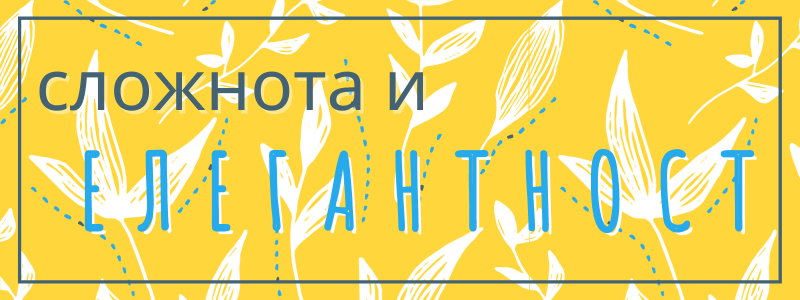

Елегантност и простота
Светът има изненадваща изненадващо количество детайли.
Разбираме го когато нещо се обърка и трябва да намерим начин да уредим нещата, които са се объркали.
Или когато се разходим с човек, който има различна специалност- на дадена улица, строителят ще види повече от нас, но не същото като зоолога например.
„Всеки сложен проблем има решение, което е ясно, просто и грешно.“ казва журналистът и езиковед Хенри Луис Менкен.
Правилно или разбираемо?
И наистина новинарите, за да задържат вниманието ни, се опитват да ни представят една понятна действителност, в която има ясни случки, действащи лица и причини.
Но за да го постигнат изпускат контекста, както и връзките между наглед несвързани процеси и събития.
Обяснено просто, всичко ни се струва логично. Но в много случаи изпуснатите детайли са от съществено значение. Те обясняват поведения, които ни се струват странни или случки, които не би трябвало да се случват.
И все пак, дори и да знаем разликата между правилността и разбираемостта, често предпочитаме да вярваме в очевидната история вместо в сложното обяснение.
Това отличава и елитните представители на дадена група или прослойка: те виждат нюанси, които ние изпускаме, така че може да се възползват от момента или пък да проявят повече такт или предпазливост.
Предимствата на простотата
От друга страна, опростяването е вид щедрост. Да опишем нещата разбираемо с прости думи и метафори, означава да помогнем да друг да следва любопитството си и да научи повече за света.
Първолаците започват с събиране на 1+1, въпреки че по- полезно за бъдещето би им било да смятат сложна лихва.
Проблемът идва, когато имаме изгода да преувеличим или да преиначим туй- онуй. Това се постига най- лесно с използването на жаргон, сложни обяснения и двусмислици. С тези похвати, отсрещната страна се обърква и се срамува да поиска повече пояснения, а нашите пропуски в знанията или изгодата ни остават неразкрити.
Рядко се случва, но най- голямото постижение е едно твърдение или действие е да е едновременно минимално и изчерпателно.
Елегантността идва тогава, когато съумеем да представим или направим сложното по разбираем или красив начин. Не случайно балерините олицетворяват това качестево: те подлагат тялото си безмилостни тренировки, само и само да предадат дадена история по грациозен и изразителен начин. Математиката също се причилява тук, и тъй като по дефиниция е абстрактна наука може да си позволи да пренебрегне детайлите.
Ефекти на привидната простота
Може би в миналото всичко не е било толкова свързано, но днес за всяко действие осъзнаваме, че има множество последствия. Дори най- простото търсене или покупка седят на върха на верига, която се простира от някое далечно кътче, най- вероятно минава през Китай и след хиляди километри достига до нас. А по пътя са засегнати по всевъзможен начин множество неподозиращи или пък точещи зъби участници.
В същото време, сложните системи не могат да се разберат като се изучават частите им, защото голяма част от непредвидимостта им идва от взаимодействието на елементите им. Това значи също, че най- малкото действие понякога може да има огромни последици. Както например, грешна маньовра на кораб можа да спре световната търговия за седмици.
Поради тази прекалена отговорност и несигурност, за да си спестим натоварването на времето и вниманието ни, все повече търсим по- прости преживявания: изчистени интерфейси, където въвеждаме запитването си и непонятен, изкуствен интелект връща смляната информация, видеа, които казват необходимото за 20 секунди, доставки на храна по домовете без да се занимаваме с пазаруване, подготовка, готвене и дори миене, защото опаковката се изхвърля след употреба.
Но въпреки че обикновено не ги виждаме последиците си остават. Вниманието ни намалява, затова не успяваме да постигнем повече от нещата, които ни се иска, но изискват повече постоянство, а пластмасовата купичка се изгаря и затопля атмосферата.
Затова задачата ни като способно хора може да е да предложим алтернатива, която използва триковете на големите компании, но да е по- човешка или по- щадяща за околната среда например.
Постигането на привидната простота
Често привидната простота не значи функционална такава. Да вземем за пример началната страница на Google- сложността не се губи: привидната простота за потребителя значи повече работа за инженерите и дизайнерите зад завесата, а ако имате някакъв подобен проект за вас като създател.
Също по- малкото за учене, необходимо за да се използва дадена услуга, значи по- малко контрол или по- малък избор, но това не винаги е зле. Да вземем за пример менюто на един ресторант: може би, за да е фурор ви трябва завързани ястия с екзотични съставки и имена, но за да е добър и недежден е достатъчно да има ограничен брой, но вкусни ястия.
Това е например тайната на McDonalds: те са известни с комбинацията от кола, картофки и бургер. Така всеки пътешественик може да влезе в което и да е заведение уверен, че ще хапне тези вкусни храни.
Когато започваме ново начинание, често искаме да споделим всичко, което знаем или може да направим наведнъж. Но в 99% от случаите по- успешно ще е да се фокусираме върху няколко основни неща, които да се усвоят или предлагат както трябва, така другите може да са още по- специални.
Такъв е случаят с Lidl: когато отидеш в супермаркета знаеш какво да очакваш, но също всеки път има продукти, които нищо чудно да се зареди само веднъж и никога повече да не се върнат. Ако говорим за ресторант, това може да са например ястие направени със сезонни плодове и зелечуци. Ако става дума за дизайн може да имаме точно определени, стандартни услуги, но ако клиента ни е надежден и разбран да направим изключение и да се погрижим за друг аспект и бранда им например.
Така също ИКЕА може да предложи евтини кюфтета и донати, защото на служителите е им се налага да отсервират или да пълнят напитки.
Щом даже международни компании с милиарди печалба държат на ограничен избор, нашата задача е да обуздаем порива си и да следваме скучния, но действащ план. Впоследствие, ще сме много по- спокойни да следваме въображението си, стъпили на здрава основа.
Простотата елиминира голяма част от несигурността, както у клиенти, така и за предприемчивия човек.
На първо място продукта/ услугата ни трябва да има по- малко функции: швейцарското ножче е най- мултифункционалното устройство, но по- често ще ползваме ножа.
На второ място, функциите й трябва да са възможно най- понятни от началото. Това се постига благодарение на аналогии и алгоритми: едните обясняват как работи, другите се грижат да няма нужда да знаем. Например алгоритъма на TikTok, още щом отвориш приложението, ти показва нещо, което може да те заинтересува и се учи.
Освен това колкото по- малко контроли или настройки изисква започването, толкова по- голям шанс има да се ползва. Вместо това може да са нужни повече стъпки, но когато всяка е лесна и ясна това е за предпочитане.
За да се случи това е полезно всичко да се обясни с помощта на познат концептуален модел, дори да е грешен: в компютъра няма наистина папки, но когато организацията на документите се обясни така, веднага ти светва крушката.
Най- простото за ползвателите е дадена услуга или програма да действа автоматично, но прекалено лесното може да създаде впечатлението все едно нямат контрол, както и да ги остави безпомощни, когато нещо се обърка.
Но и другата крайност: прекалено много подробности може да е обезкуражаващо: кое бихте предпочели, как да поправите скъсани маратонки в три стъпки или в 30 стъпки.
Дори и да има толкова отделни манипулации, майсторът не вижда сложност, а множесто прости отделни неща или инструменти. Всяко оръдие служи за точно определена задача дори да е просто. А за да се помнят всички и да са организирани, няколко стъпки са групирани.
Сложността води със себе си и други неудобства. Система, която е трудна за създаване, обикновено е лесна за счупване, защото има много променливи. В такъв случай превенцията е по- постижима от детекцията. Тоест да не чакаме нещо да се обърка, а постоянно да тестваме процеса си и да търсим обратна връзка.
Когато все пак трябва да определим каква е причината нещо да не работи както трябва добре е да имаме предвид, че корелацията не винаги предполага причинно-следствена връзка. Да речем например, че наблюдаваме, че хората с джапанки по- често купуват сладолед. Носенето на джапанки не е причината за покупката, но и двете се дължат на летния сезон.
Айнщайн е казал, че "Всичко трябва да се прави възможно най-просто, но не и по-просто. -Говоря с всички по един и същи начин, било то боклукът или президентът на университета.”
За да се постигне тази простота, човек трябва да може да прави разлика между шум и сигнал. Сигналът е информация, която има значение; шумът е излишна или неразбираема част. Ако купувате слънчогледови семки, обелките са неядими, тоест плащате за нещо, което не ви е полезно. Например за някой, който говори френски, новините на TV5 са понятна информация, но за друг може да са безсмислени. За някой забодените безопасни игли може да са само аксесоар, но за друг са знак, че си търсят гадже. Така че разликата не е винаги толкова ясна и може да зависи от контекста и от човека, за който е предназначена. Да речем, че един служител иска да напусне- това може да се дължи просто на обстоятелствата, но може и да подсказва нездравословна среда или лош мениджър.
Затова най- революционните изобретения или наблюдения идват от млади, неопитни учени или разработчици, които не са обременени с правилата на сферата, а виждат с очите на дете. Те също може да прилагат концептуалните модели от един клон към друг.
Също така, веднъж щом имаме солиден продукт, може да обърнем внимание на детайли, които иначе биха ни се сторили незначителни, за да променим нагласата си така че да постигнем велики неща. Например Стив Джобс забелязал, че картонените изрезки на фигури нямат отпечатан гръб, или пък накарал в приложението за времето дъжда да отскача от карето с температурата. Всеки ще си каже, че това хич не е важно, но не и той. Това го прави един от най- тачените предприемачи.
Разбира се, ако започнем от долу-нагоре това ще ни натовари излишно и може да предотврати дори да се опитаме. Така че е важно, колкото и изкушаващо да е, да започнем с минимален жизнеспособен продукт (MVP). Това не означава частичен продукт с минимални функции, а най-опростения вариант, който би свършил работа.

Постигането на елегантността
Когато открием начин, който работи, не ни се иска да го променяме от страх да не го развалим или за да си спестим излишни усилия. Но най- добрите, революционните фирми не се задоволяват с доброто, защото именно то, а не нескопосаността, предотвратява постигането на великото.
Елегантността извира от постоянното освежаване на ума. Тя не се осланя на заучени реакции, с които лесно да се измъкнем от дадена ситуация, а изисква да не действаме първично, а смело, но премерено, особено когато алтернатива изглежда толкова по- лесна.
Елегантността се намира там, където няма нищо излишно или натоварващо; затова се изразява в плавно движение, наличност на необходимото, но без излишък, и правене така, че отсрещната страна да се чувства окрилена и изслушана.
Може да го постигнем като си дадем сметка какво ни харесва, какво ни е приятно и как искаме да се държат с нас. И после да действаме по неинтуитивен начин.
Например, знаем, че най- лесно ще вземем сертификат, ако научим наизуст най- честите въпроси, но като имаме предвид, че после ще трябва да прилагаме наученото, може да седнем по- сериозно и да обърнем внимание на основните положения.
Или знаем, че ни е по- приятно да чуваме комплименти за свършената работа, но срещаме потенциален служител, който все намира недостатъци. За наше спокойствие първият ни инстикт би бил да не го наемаме, но ако става дума за добронамерен човек, с негова помощ може да подобрим значително продукта или услугата си, дори и да ни донесе някои отрицателни емоции.
Това означава, че елегантностна изисква осъзнатост, постоянство и доброжелателност.
Те идват от най- вече от личния опит, но също и в началото на живота от енергията и таланта, който може да са умения несъзнато предадени чрез пример или поради интерес на детето.
С целенасоченото развиване през годините, по- нататък дори поради някаква причина ако ги изгубим, болест или прегряване да речем, ще сме спечелили други предимства като техника и усет към нюанса, а също ще сме станали необикновена личност с ценен и неповторим поглед върху областта ни.
Например една певица може да загуби гласа си, но не и тайните на занаята, както и уникалните си вкус и послание. Затова може да преориентира към продуциране, преподаване или друга позиция, за която са нужни уникалните й умения.
За да направите околния си свят малко по- елегантен, вижте безплатното обучение по Създаване на графики.